Lattice 4x2
Contents
[53]:
import numpy as np
from scipy.linalg import expm, null_space, solve
import matplotlib.pyplot as plt
import networkx as nx
from qlinks.lattice.square_lattice import SquareLattice
from qlinks.symmetry.gauss_law import GaussLaw
from qlinks.computation_basis import ComputationBasis
from qlinks.solver.deep_first_search import DeepFirstSearch
from qlinks.model import QuantumLinkModel
from qlinks.visualizer.graph import GraphVisualizer
[37]:
def format_custom_index(index):
return [f"({i}) {idx}" for i, idx in enumerate(index)]
Lattice 4x2#
[5]:
scar = np.array([
[0, 0, 0, 1, 0, 0, 1, 1, 1, 0, 1, 0, 1, 1, 0, 1], # 5037
[0, 0, 1, 0, 0, 1, 0, 1, 1, 1, 0, 0, 1, 1, 1, 0], # 9678
[0, 0, 1, 1, 0, 0, 0, 1, 1, 1, 0, 1, 1, 0, 1, 0], # 12762
[0, 1, 0, 1, 0, 0, 1, 0, 1, 1, 1, 0, 1, 1, 0, 0], # 21228
# [0, 0, 0, 1, 0, 0, 0, 1, 1, 1, 1, 0, 1, 1, 1, 0], # 4509
# [0, 0, 1, 1, 0, 0, 1, 1, 1, 0, 0, 1, 1, 0, 0, 1] # 13209
])
[64]:
lattice_shape = (4, 2)
gauss_law = GaussLaw.from_staggered_charge_distri(*lattice_shape)
gauss_law.flux_sector = (0, 0)
dfs = DeepFirstSearch(gauss_law, max_steps=int(1e+4))
basis = gauss_law.to_basis(dfs.solve(n_solution=16))
coup_j, coup_rk = (1, -0.1)
model = QuantumLinkModel(coup_j, coup_rk, lattice_shape, basis)
ham = model.hamiltonian
evals, evecs = np.linalg.eigh(ham)
2023-12-04 00:58:32 [deep_first_search.py] INFO: Deep First Search starts.
2023-12-04 00:58:33 [deep_first_search.py] INFO: Found 16 Solutions as required in 103 steps.
[7]:
df = basis.dataframe.copy(deep=True)
df.index = format_custom_index(df.index)
df
[7]:
| 0 | 1 | 2 | 3 | 4 | 5 | 6 | 7 | 8 | 9 | 10 | 11 | 12 | 13 | 14 | 15 | |
|---|---|---|---|---|---|---|---|---|---|---|---|---|---|---|---|---|
| (0) 17595 | 0 | 1 | 0 | 0 | 0 | 1 | 0 | 0 | 1 | 0 | 1 | 1 | 1 | 0 | 1 | 1 |
| (1) 18867 | 0 | 1 | 0 | 0 | 1 | 0 | 0 | 1 | 1 | 0 | 1 | 1 | 0 | 0 | 1 | 1 |
| (2) 19638 | 0 | 1 | 0 | 0 | 1 | 1 | 0 | 0 | 1 | 0 | 1 | 1 | 0 | 1 | 1 | 0 |
| (3) 36135 | 1 | 0 | 0 | 0 | 1 | 1 | 0 | 1 | 0 | 0 | 1 | 0 | 0 | 1 | 1 | 1 |
| (4) 37947 | 1 | 0 | 0 | 1 | 0 | 1 | 0 | 0 | 0 | 0 | 1 | 1 | 1 | 0 | 1 | 1 |
| (5) 39219 | 1 | 0 | 0 | 1 | 1 | 0 | 0 | 1 | 0 | 0 | 1 | 1 | 0 | 0 | 1 | 1 |
| (6) 39990 | 1 | 0 | 0 | 1 | 1 | 1 | 0 | 0 | 0 | 0 | 1 | 1 | 0 | 1 | 1 | 0 |
| (7) 44307 | 1 | 0 | 1 | 0 | 1 | 1 | 0 | 1 | 0 | 0 | 0 | 1 | 0 | 0 | 1 | 1 |
| (8) 50283 | 1 | 1 | 0 | 0 | 0 | 1 | 0 | 0 | 0 | 1 | 1 | 0 | 1 | 0 | 1 | 1 |
| (9) 51555 | 1 | 1 | 0 | 0 | 1 | 0 | 0 | 1 | 0 | 1 | 1 | 0 | 0 | 0 | 1 | 1 |
| (10) 52326 | 1 | 1 | 0 | 0 | 1 | 1 | 0 | 0 | 0 | 1 | 1 | 0 | 0 | 1 | 1 | 0 |
| (11) 52773 | 1 | 1 | 0 | 0 | 1 | 1 | 1 | 0 | 0 | 0 | 1 | 0 | 0 | 1 | 0 | 1 |
| (12) 55410 | 1 | 1 | 0 | 1 | 1 | 0 | 0 | 0 | 0 | 1 | 1 | 1 | 0 | 0 | 1 | 0 |
| (13) 55857 | 1 | 1 | 0 | 1 | 1 | 0 | 1 | 0 | 0 | 0 | 1 | 1 | 0 | 0 | 0 | 1 |
| (14) 60498 | 1 | 1 | 1 | 0 | 1 | 1 | 0 | 0 | 0 | 1 | 0 | 1 | 0 | 0 | 1 | 0 |
| (15) 60945 | 1 | 1 | 1 | 0 | 1 | 1 | 1 | 0 | 0 | 0 | 0 | 1 | 0 | 0 | 0 | 1 |
[80]:
plt.matshow(model.kinetic_term)
plt.colorbar()
plt.show()
g = nx.from_numpy_array(-model.kinetic_term)
assert nx.is_bipartite(g)
left, right = nx.bipartite.sets(g)
pos = nx.bipartite_layout(g, left, align="horizontal")
nx.draw(g, pos, with_labels=True)
plt.show()
plt.spy(evecs, precision=1e-12, markersize=12)
plt.show()
plt.imshow(np.abs(evecs), interpolation='none', cmap='binary')
plt.colorbar()
plt.show()
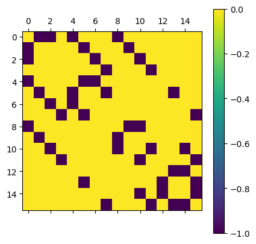
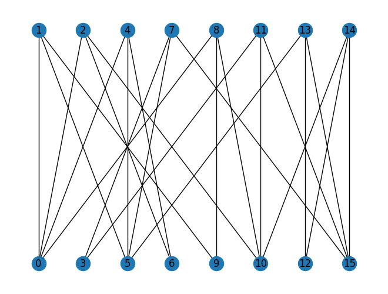
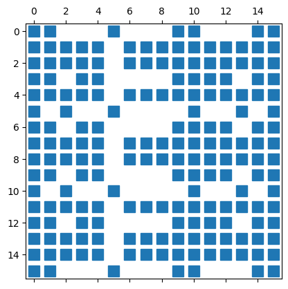
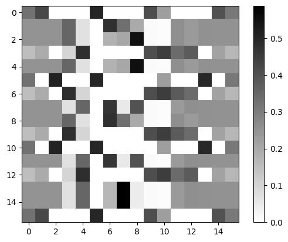
[86]:
# ns = null_space(-model.kinetic_term)
# plt.matshow(ns.T)
# plt.colorbar()
# np.linalg.matrix_rank(model.kinetic_term)
nx.k_core(g, k=2).edges()
[86]:
EdgeView([(0, 1), (0, 2), (0, 4), (0, 8), (1, 5), (1, 9), (2, 6), (2, 10), (3, 7), (3, 11), (4, 5), (4, 6), (5, 7), (5, 13), (7, 15), (8, 9), (8, 10), (10, 11), (10, 14), (11, 15), (12, 13), (12, 14), (13, 15), (14, 15)])
[77]:
g = GraphVisualizer(SquareLattice(*lattice_shape, basis.dataframe.iloc[1]))
g.plot()
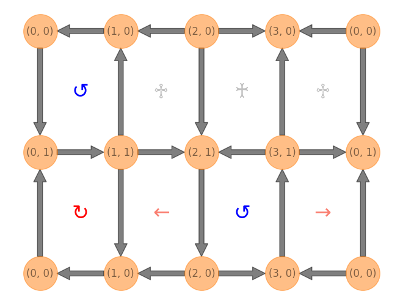
[42]:
evecs[:, 5:9]
[42]:
array([[-5.00000000e-01, -1.65314690e-15, 8.38222196e-16,
-1.93670690e-16],
[ 1.10257314e-17, -3.23650112e-01, -5.08970574e-01,
-1.05827972e-01],
[ 1.56851409e-16, 3.23650112e-01, 5.08970574e-01,
1.05827972e-01],
[ 5.55111512e-17, 1.36002321e-15, -5.55111512e-17,
2.77555756e-17],
[-8.22766909e-16, 5.83589631e-01, -1.48603603e-01,
1.11086054e-01],
[ 5.00000000e-01, 2.77555756e-16, -7.21644966e-16,
1.94289029e-16],
[-9.71445147e-17, -1.66533454e-16, 1.35481903e-15,
-7.14706072e-16],
[ 2.77555756e-16, -2.77702724e-02, 3.65283830e-01,
-4.90710236e-01],
[ 9.07812946e-16, -5.83589631e-01, 1.48603603e-01,
-1.11086054e-01],
[-6.93889390e-17, 0.00000000e+00, 1.03909936e-15,
-5.89805982e-16],
[ 5.00000000e-01, 3.60822483e-16, -8.32667268e-16,
2.63677968e-16],
[-6.10622664e-16, 2.32169247e-01, -2.92290347e-01,
-4.85452154e-01],
[ 0.00000000e+00, 1.30451205e-15, -5.55111512e-17,
-6.93889390e-17],
[ 3.60822483e-16, -2.32169247e-01, 2.92290347e-01,
4.85452154e-01],
[-5.82867088e-16, 2.77702724e-02, -3.65283830e-01,
4.90710236e-01],
[-5.00000000e-01, 0.00000000e+00, -4.89192020e-16,
4.71844785e-16]])
[47]:
noise_strength = 0.1
for i, row in basis.dataframe.iterrows():
noise = row.to_numpy().astype(int)
noise_idx = int("".join(map(str, noise)), 2)
scar = np.append(scar, [noise], axis=0)
scar_basis = ComputationBasis(scar)
scar_basis.sort()
assert basis.dataframe.loc[scar_basis.index].equals(scar_basis.dataframe)
scar_state = np.zeros((basis.n_states, 1))
scar_state[basis.dataframe.index.get_loc(noise_idx), :] += noise_strength
scar_state[basis.dataframe.index.get_loc(5037), :] += 1
scar_state[basis.dataframe.index.get_loc(9678), :] += -1
scar_state[basis.dataframe.index.get_loc(12762), :] += -1
scar_state[basis.dataframe.index.get_loc(21228), :] += 1
scar_state /= np.linalg.norm(scar_state)
fidelity = []
for t in np.linspace(0, 300, 100):
evol = expm(-1j * t * ham)
evol_state = evol @ scar_state
fidelity.append(np.abs(evol_state.T @ scar_state).item() ** 2)
plt.plot(np.linspace(0, 300, 100), fidelity, linestyle="--", marker="o")
plt.ylim(0.0001, 1.1)
# plt.yscale('log')
plt.xlabel("t")
plt.ylabel("Fidelity(t)")
plt.tight_layout()
plt.show()
print(f"noise_idx = {noise_idx}")
print(f"O_kin @ psi_scar = {(model.kinetic_term @ scar_state).flatten()}")
print(f"<O_kin> = {(scar_state.T @ model.kinetic_term @ scar_state).item()}")
print(f"<O_pot> = {(scar_state.T @ model.potential_term @ scar_state).item()}")
print(f"<H> = {(scar_state.T @ ham @ scar_state).item()}")
# np.testing.assert_allclose(evecs[:, 7], scar_state.T, atol=1e-12)
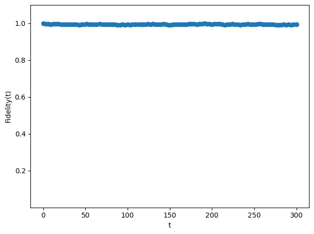
noise_idx = 4590
O_kin @ psi_scar = [ 0. -0.04993762 -0.04993762 0. -0.04993762 0.
0. 0. -0.04993762 0. 0. 0.
0. 0. 0. 0. ]
<O_kin> = 0.0
<O_pot> = -0.3002493765586035
<H> = -0.3002493765586035
noise_idx = 5037
O_kin @ psi_scar = [-0.04873702 0. 0. -0.04873702 0. -0.04873702
0. 0. 0. 0. 0. 0.
0. 0. 0. 0. ]
<O_kin> = 0.0
<O_pot> = -0.29999999999999993
<H> = -0.29999999999999993
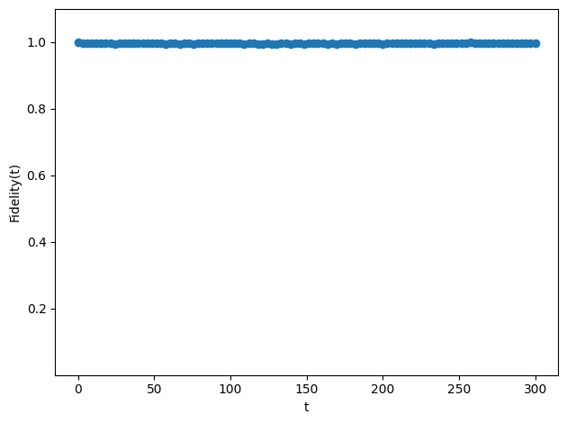
noise_idx = 9678
O_kin @ psi_scar = [-0.05123155 0. 0. -0.05123155 0. 0.
0. 0. 0. 0. -0.05123155 0.
0. 0. 0. 0. ]
<O_kin> = 0.0
<O_pot> = -0.3000000000000001
<H> = -0.3000000000000001

noise_idx = 10125
O_kin @ psi_scar = [ 0. -0.04993762 -0.04993762 0. 0. 0.
0. 0. 0. 0. 0. 0.
0. 0. 0. 0. ]
<O_kin> = 0.0
<O_pot> = -0.2997506234413965
<H> = -0.2997506234413965
noise_idx = 12762
O_kin @ psi_scar = [-0.05123155 0. 0. 0. 0. -0.05123155
0. 0. 0. 0. 0. 0.
-0.05123155 0. 0. 0. ]
<O_kin> = 0.0
<O_pot> = -0.3000000000000001
<H> = -0.3000000000000001
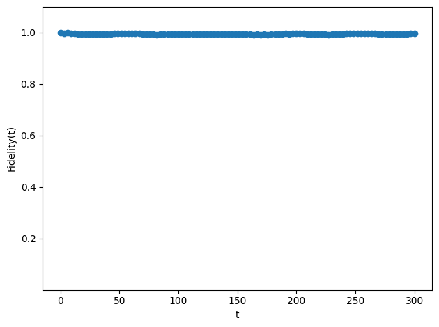
noise_idx = 13209
O_kin @ psi_scar = [ 0. -0.04993762 0. 0. -0.04993762 0.
0. -0.04993762 0. 0. 0. 0.
0. -0.04993762 0. 0. ]
<O_kin> = 0.0
<O_pot> = -0.3002493765586035
<H> = -0.3002493765586035

noise_idx = 13980
O_kin @ psi_scar = [ 0. 0. 0. 0. 0. 0.
0. -0.04993762 0. 0. 0. 0.
0. 0. -0.04993762 0. ]
<O_kin> = 0.0
<O_pot> = -0.2997506234413965
<H> = -0.2997506234413965

noise_idx = 15252
O_kin @ psi_scar = [ 0. 0. 0. 0. 0. -0.04993762
-0.04993762 0. 0. 0. 0. 0.
0. 0. 0. -0.04993762]
<O_kin> = 0.0
<O_pot> = -0.30000000000000004
<H> = -0.30000000000000004
noise_idx = 21228
O_kin @ psi_scar = [-0.04873702 0. 0. 0. 0. 0.
0. 0. 0. 0. -0.04873702 0.
-0.04873702 0. 0. 0. ]
<O_kin> = 0.0
<O_pot> = -0.29999999999999993
<H> = -0.29999999999999993
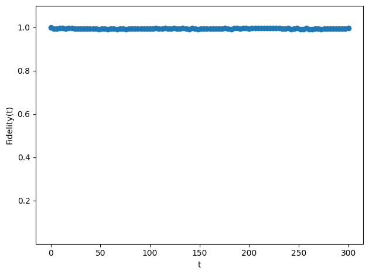
noise_idx = 25545
O_kin @ psi_scar = [ 0. 0. 0. 0. 0. 0.
0. 0. 0. 0. 0. -0.04993762
0. -0.04993762 0. 0. ]
<O_kin> = 0.0
<O_pot> = -0.2997506234413965
<H> = -0.2997506234413965
noise_idx = 26316
O_kin @ psi_scar = [ 0. 0. -0.04993762 0. 0. 0.
0. 0. -0.04993762 0. 0. -0.04993762
0. 0. -0.04993762 0. ]
<O_kin> = 0.0
<O_pot> = -0.3002493765586035
<H> = -0.3002493765586035
noise_idx = 27588
O_kin @ psi_scar = [ 0. 0. 0. 0. 0. 0.
0. 0. 0. -0.04993762 -0.04993762 0.
0. 0. 0. -0.04993762]
<O_kin> = 0.0
<O_pot> = -0.30000000000000004
<H> = -0.30000000000000004
noise_idx = 29400
O_kin @ psi_scar = [ 0. 0. 0. 0. -0.04993762 0.
0. 0. -0.04993762 0. 0. 0.
0. 0. 0. 0. ]
<O_kin> = 0.0
<O_pot> = -0.2997506234413965
<H> = -0.2997506234413965
noise_idx = 45897
O_kin @ psi_scar = [ 0. 0. 0. 0. 0. -0.04993762
0. 0. 0. -0.04993762 0. 0.
0. 0. 0. -0.04993762]
<O_kin> = 0.0
<O_pot> = -0.30000000000000004
<H> = -0.30000000000000004

noise_idx = 46668
O_kin @ psi_scar = [ 0. 0. 0. 0. 0. 0.
-0.04993762 0. 0. 0. -0.04993762 0.
0. 0. 0. -0.04993762]
<O_kin> = 0.0
<O_pot> = -0.30000000000000004
<H> = -0.30000000000000004
noise_idx = 47940
O_kin @ psi_scar = [ 0. 0. 0. 0. 0. 0.
0. -0.04993762 0. 0. 0. -0.04993762
0. -0.04993762 -0.04993762 0. ]
<O_kin> = 0.0
<O_pot> = -0.3002493765586035
<H> = -0.3002493765586035
Lattice 4x4#
[50]:
lattice_shape = (4, 4)
gauss_law = GaussLaw.from_staggered_charge_distri(*lattice_shape)
gauss_law.flux_sector = (0, 0)
dfs = DeepFirstSearch(gauss_law, max_steps=int(1e+5))
basis = gauss_law.to_basis(dfs.solve(n_solution=132))
coup_j, coup_rk = (1, 1)
model = QuantumLinkModel(coup_j, coup_rk, lattice_shape, basis)
ham = model.hamiltonian
evals, evecs = np.linalg.eigh(ham)
2023-12-03 21:40:23 [deep_first_search.py] INFO: Deep First Search starts.
2023-12-03 21:40:24 [deep_first_search.py] INFO: Found 132 Solutions as required in 1626 steps.
[38]:
df = basis.dataframe.copy(deep=True)
df.index = format_custom_index(df.index)
df
[38]:
| 0 | 1 | 2 | 3 | 4 | 5 | 6 | 7 | 8 | 9 | ... | 22 | 23 | 24 | 25 | 26 | 27 | 28 | 29 | 30 | 31 | |
|---|---|---|---|---|---|---|---|---|---|---|---|---|---|---|---|---|---|---|---|---|---|
| (0) 1142025915 | 0 | 1 | 0 | 0 | 0 | 1 | 0 | 0 | 0 | 0 | ... | 1 | 0 | 1 | 0 | 1 | 1 | 1 | 0 | 1 | 1 |
| (1) 1143328443 | 0 | 1 | 0 | 0 | 0 | 1 | 0 | 0 | 0 | 0 | ... | 1 | 0 | 1 | 0 | 1 | 1 | 1 | 0 | 1 | 1 |
| (2) 1146285243 | 0 | 1 | 0 | 0 | 0 | 1 | 0 | 0 | 0 | 1 | ... | 0 | 0 | 1 | 0 | 1 | 1 | 1 | 0 | 1 | 1 |
| (3) 1147587771 | 0 | 1 | 0 | 0 | 0 | 1 | 0 | 0 | 0 | 1 | ... | 0 | 0 | 1 | 0 | 1 | 1 | 1 | 0 | 1 | 1 |
| (4) 1147913403 | 0 | 1 | 0 | 0 | 0 | 1 | 0 | 0 | 0 | 1 | ... | 0 | 0 | 1 | 0 | 1 | 1 | 1 | 0 | 1 | 1 |
| ... | ... | ... | ... | ... | ... | ... | ... | ... | ... | ... | ... | ... | ... | ... | ... | ... | ... | ... | ... | ... | ... |
| (127) 3998411793 | 1 | 1 | 1 | 0 | 1 | 1 | 1 | 0 | 0 | 1 | ... | 0 | 0 | 0 | 0 | 0 | 1 | 0 | 0 | 0 | 1 |
| (128) 3999714321 | 1 | 1 | 1 | 0 | 1 | 1 | 1 | 0 | 0 | 1 | ... | 0 | 0 | 0 | 0 | 0 | 1 | 0 | 0 | 0 | 1 |
| (129) 4000039953 | 1 | 1 | 1 | 0 | 1 | 1 | 1 | 0 | 0 | 1 | ... | 0 | 0 | 0 | 0 | 0 | 1 | 0 | 0 | 0 | 1 |
| (130) 4004924433 | 1 | 1 | 1 | 0 | 1 | 1 | 1 | 0 | 1 | 0 | ... | 0 | 0 | 0 | 0 | 0 | 1 | 0 | 0 | 0 | 1 |
| (131) 4005250065 | 1 | 1 | 1 | 0 | 1 | 1 | 1 | 0 | 1 | 0 | ... | 0 | 0 | 0 | 0 | 0 | 1 | 0 | 0 | 0 | 1 |
132 rows × 32 columns
[57]:
# plt.matshow(ham)
# plt.colorbar()
# plt.show()
g = nx.from_numpy_array(model.kinetic_term)
left, right = nx.bipartite.sets(g)
pos = nx.bipartite_layout(g, left, align='horizontal')
# pos = nx.spectral_layout(g)
fig = plt.figure(figsize=(80, 32))
nx.draw(g, pos, with_labels=True, node_size=3000, font_size=32)
plt.show()
plt.spy(evecs, precision=1e-12, markersize=0.3)
plt.show()
# plt.imshow(np.abs(evecs), interpolation='none', cmap='binary')
# plt.colorbar()
# plt.show()


[59]:
print(np.linalg.matrix_rank(model.kinetic_term))
plt.matshow(evecs[:, 40:60].T)
plt.colorbar()
102
[59]:
<matplotlib.colorbar.Colorbar at 0x128995a10>
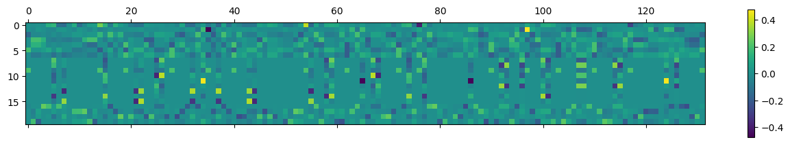
[44]:
# {i: len(np.where(np.abs(evecs[:, i]) > 1e-12)[0]) for i in range(300)}
for i in np.where(np.abs(evecs[:, 50]) > 1e-12)[0][:10]:
g = GraphVisualizer(SquareLattice(*lattice_shape, basis.dataframe.iloc[i]))
# plt.figure(figsize=(10, 4), facecolor='white')
g.plot()
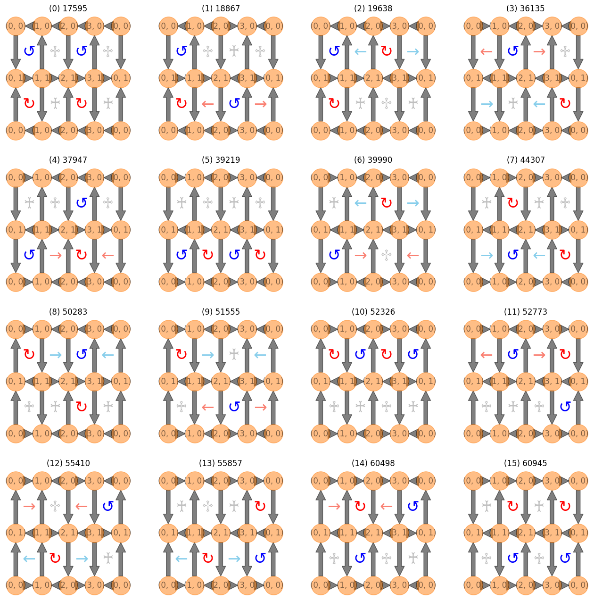
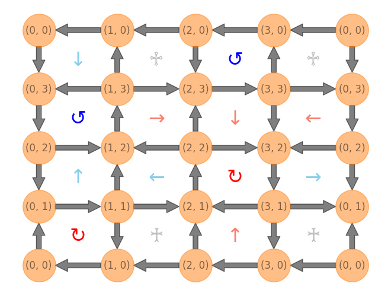
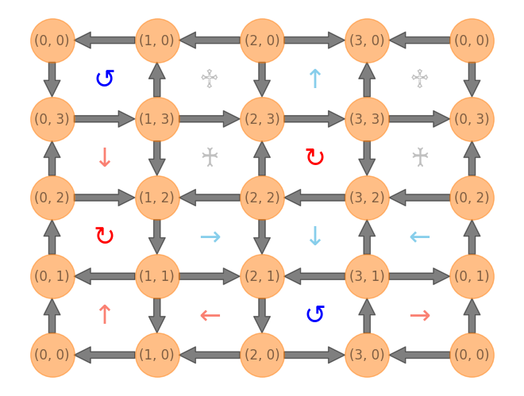
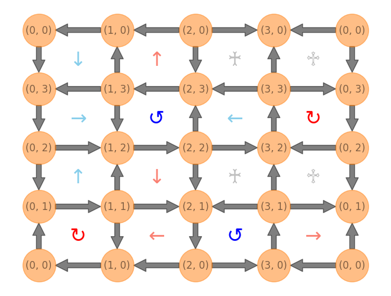
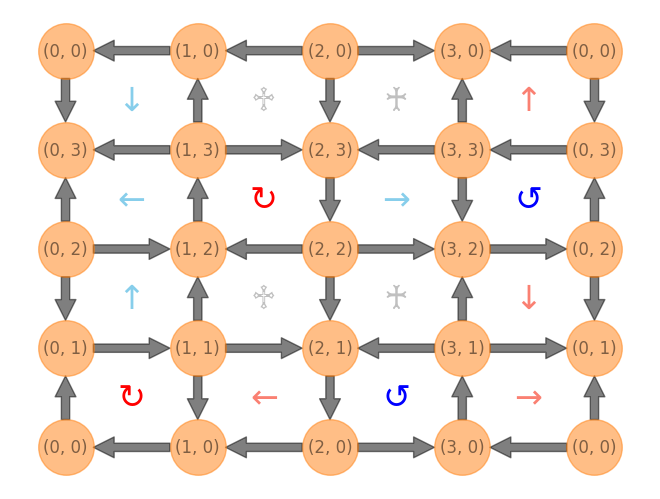
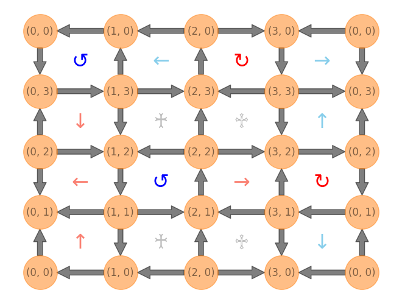
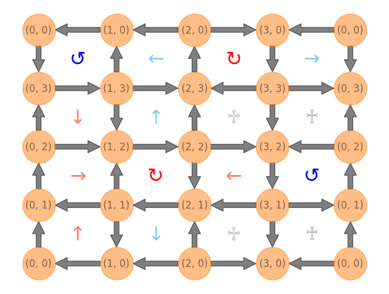
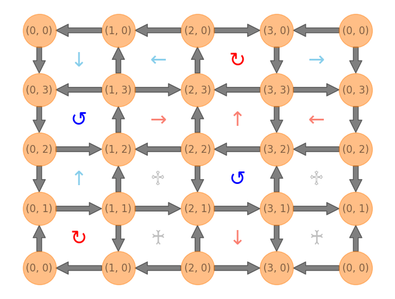
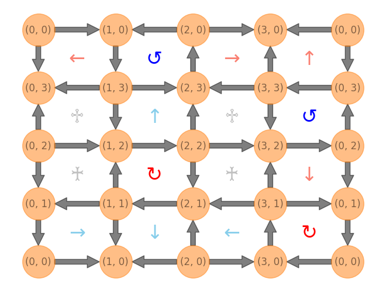
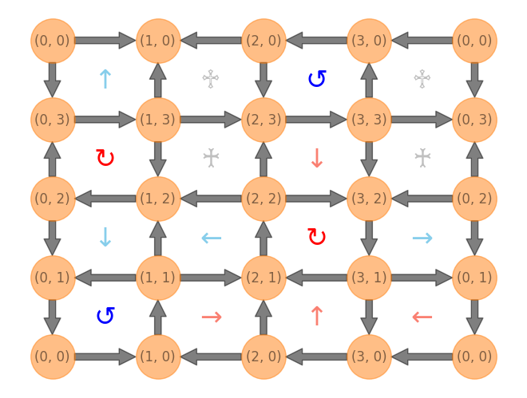
[ ]: